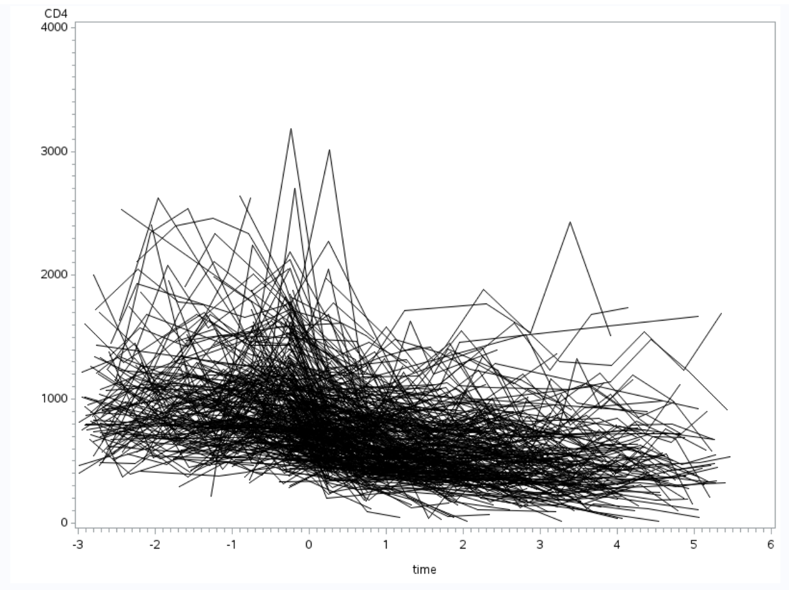
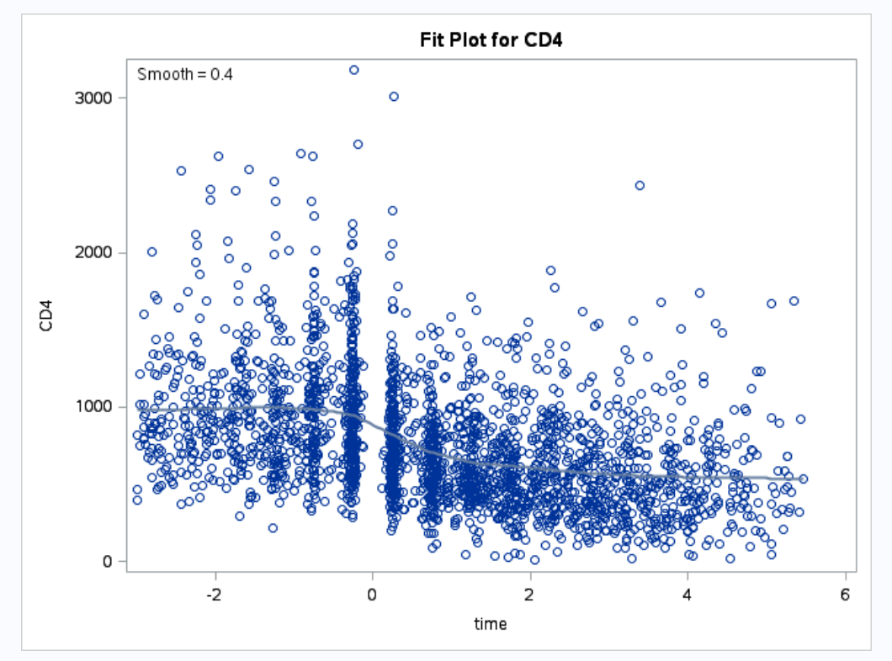
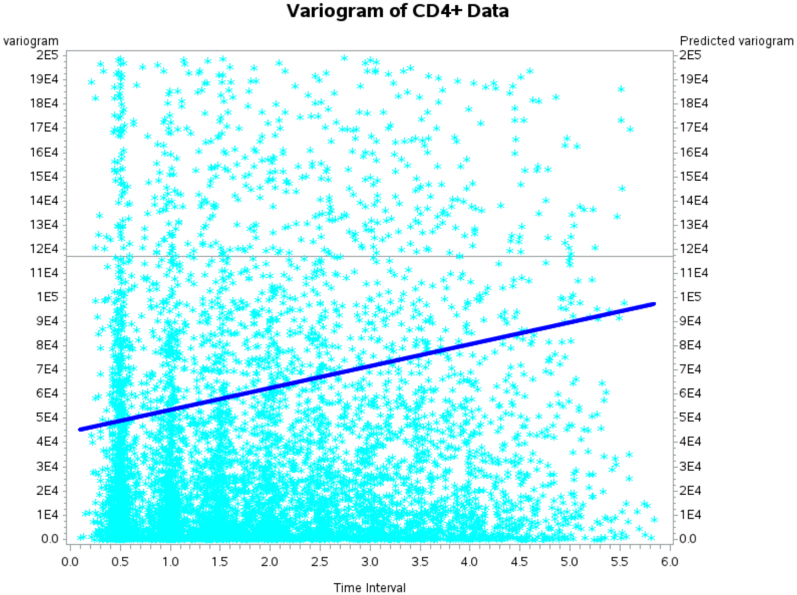

Update
Busy moving. I have a summer project for this blog (look forward to it, it’ll be fun). I also a summer internship at JPL NASA!
You can get the pdf paper here.
I just finished my semester and I did a final project that I’m pretty proud of. I put in a lot of effort and my professor Dr. Zhou was very awesome.
Abstract
Human immunodeficiency virus or HIV are responsible for decline in CD4+ cell count. The investigation is set out to find the population rate of CD4+ cell count decline per milliliter of blood, to characterize the of individual rate of cell decline, and the factors that predict cell decline. Using exploratory data analysis and longitudinal tools, a linear mixed effects model with random intercept and random slope was created. The estimated population average time course of CD4+ cell depletion is 80.1857 CD4+ cells per milliliter of blood. The degree of heterogeneity across men in the rate of progression as time passes is 54.8061127978 cell count. The factors that predict cell count decline is time, pack of smoke, number of sexual partners, cesd mental illness score, age & time interaction, and smoke & time. The time factor is the most dramatic in term of CD4+ cell depletion.
1 Introduction
1.1 HIV and CD4+ Cells
Human immunodeficiency virus or HIV is a virus that attack immune system by killing a class of immune cell named CD4+ cell. On average a normal person without HIV have 1000 cells per milliliter of blood. As time passes from the initial HIV infection an infected person CD4+ cell counts starts to decline. Acquired immune deficiency syndrome or AIDS is the disease caused by the HIV virus.
1.2 The Data
The data used in this paper is a subset of the Multicenter AIDS Cohort Study with 369 men with HIV. The data consist of columns representing: time since seroconversion, CD4 count, age (relative to arbitrary origin), packs of cigarettes smoked per day, recreational drug use (yes/no), number of sexual partners, CESD (mental illness score), and subject ID. The data have been standardized, the measurements are unbalance, and the time interval are not evenly spaced.
1.3 Aim of the Investigation
The aim of the investigation is four main points: average time course of CD4+ cell depletion, time course for individual men, to characterize the degree of heterogeneity across men in the rate of progression, and factors which predict CD4+ cell changes.
2 Methods
2.1 Exploratory Data Analysis
The goal in exploratory data analysis (EDA) is to have an idea what the CD4+ cell count data looks like and ideas to go from EDA to modeling the data. Creating a response trend model will give an idea how time affect the response and if polynomial time is needed. A variogram graph will indicate what kind of variance is needed to be account for in the model. There are three different kind of variance either random effect variance, within-subject variance, and between-subject variance are needed.
2.2 Modeling Longitudinal Data
The next step is to create a suitable longitudinal model for the CD4+ cell data to answer the aim of this investigation. The model that will be chosen will have to address the variances that was shown in the variogram during EDA. After the model is selected the next step will be predictor selection. The predictor selection will be base on the deviance test of the full and the reduced model. Deviance test will be perform because the comparison are base on nested models.
2.3 Assumptions
The assumptions this investigation made is there are between-subject variations, within-subject variations, and measurement variations that need to be explicitly accounted for. The chosen longitudinal model will account for these explicitly so that the investigation can have an accurate and precise answers to the aim of this investigation.
Between-subject is latent factors. Latent factors are biological variability examples are diet, genetics, and other latent factors. Latent factors can keep an individuals CD4+ cell count consistently higher than the population mean or lower than the population mean.
The within-subject variation is serial correlation. The serial correlation is induced by time, the close two measurements are the more correlated they are. The farther apart two measurements are the less correlated they are.
Measurement variation takes into account for the process of taking measurements is an imperfect process and that there will be some variation in taking CD4+ cell count measurement. A variogram with force equally spacing of time intervals will confirm these assumptions of variations exist in the CD4+ cell count data.
3 Results
3.1 Exploratory Data Analysis Results

Figure 1: A graph between the response of the CD4+ cell count on the y-axis and the time points on the x-axis.
The spaghetti plot, Figure 1, shows that the data is unbalanced and that the time intervals are irregular and unequaled. It also show that individual have different base line which imply random intercept and that individual have different rate of progression which imply random slope. This will help in model selection especially when certain covariance structure have assumption about balance data and equally spaced time intervals.

Figure 2: A graph between the response of the CD4+ cell count on the y-axis and the time points on the x-axis.
The response trend graph, Figure 2, indicate that perhaps time is not constant but some sort of polynomial. Between time point 0 and 2 months there is a sharp drop in CD4+ cell count and closer to the 2 month time point the CD4+ cell count rate of decline starts to steady out and the sharp decrease rate is slowed down drastically. Modeling the data with quadratic or cubic time predictor may be needed base on this graph.

Figure 3: A variogram of the CD4+ cell count data with time intervals forced to be equally space.
Next is a plotted variogram (Figure 3) to check the assumption of having three sources of variation. Due to the data having unequaled time intervals the measurements are averaged and binned to the nearest time point. The blue line represent that variogram line and the grey horizontal line represents total variance.
Looking at Figure 3, the variogram blue solid line does not start at zero it indicate that there exist measurement errors. The variogram is not a flat blue line but a slanted line with a slope indicating that there exist serial correlation. Finally the blue line does not touched the upper limit of total variance indicating that there is random effect in play. The assumption that the CD4+ cell count data have all three sources of variation can be safely assume and is verified empirically.
3.2 Model Selection and Rejected Models
Longitudinal analysis have many linear models that to choose from. Models such as unstructured covariance and structured covariance. This section will discuss the reason for not choosing certain models.
Unstructured covariance is ruled out for two reasons. The first reason being that the large data set and large number of predictors would result in a large amount of parameter estimations. The second reason is that unstructured covariance is unsuitable for data set that have measurement taken at unequally spaced intervals.
Toeplitz covariance structure and autoregressive covariance structure both are other choices of structured covariance model. Both toeplitz and autoregressive assume that measurements are made at equal intervals of time. The CD4+ cell data have irregular unequal intervals of time.
The variogram shows there are three sources of variation. Independent model is rejected because the model assume there is only measurement error. Uniform model is also rejected because it only address two sources of variation, measurement error and between-individual variation. Exponential covariance model is rejected because the model address only within-individual variation.
Linear mixed effects models is chosen is because the model addresses all three sources of variation. The model explicitly distinguished between fixed and random effects. The advantage of this explicit distinction enable accurate and precise answers to the aim of this investigation.
3.3 Predictor Selection
| Predictors | β_hat values | p-values for t-test |
|---|---|---|
| intercept | 790.11 | <.0001 |
| time | -81.6092 | <.0001 |
| age | 1.6277 | 0.3790 |
| smoke | 41.0459 | <.0001 |
| drug | 22.6537 | 0.2677 |
| partners | 6.5509 | 0.0043 |
| cesd | -2.3499 | 0.0070 |
| age × time | -1.3805 | 0.0317 |
| smoke × time | -14.2323 | <.0001 |
| drug × time | -1.7315 | 0.8488 |
| partners × time | -0.3958 | 0.7161 |
| cesd × time | 0.1585 | 0.6899 |
| time^2 | 0.8753 | 0.6187 |
Table 1: Full linear mixed effects model estimate.
After choosing the linear fixed effects model with random intercept and random slope to model the data, the next part is selecting a good combination of predictors that describe the CD4+ cell count data. A full model is fitted first. From Table 1, which show the estimated β, predictors that are not significant at p-value of 0.05 will be dropped and the predictors that are significant will be kept as a reduced model. Note the time^2 was included in the full model because of the nonlinear trend of time that was indicated in the response trend graph.
The predictors that are dropped are drug, drug × time, partners × time, cesd × time, and time^2. Even though the age predictor is not significant the interaction age × time is significant therefore the age predictor is kept in the reduced model.
| Full Model | Reduced Model | |
|---|---|---|
| intercept | 790.11 | <.0001 |
| -2 Log Likelihood | 33603.4 | 33600.9 |
| χ2 Test | 2.5 | 2.5 |
| Statistic Degree of Freedom | 13 | 8 |
| χ2 25,0.95 | 11.070 | 11.070 |
Table 2: Likelihood Ratio test for two linear mixed effect models.
Hypothesis H1: Reduced Linear Mixed Effects Model Hypothesis H2: Full Linear Mixed Effects Model
After fitting the reduced model, a likelihood ratio test was conducted between the full model and the reduced model. Table 2 shows the χ2 test statistic at 2.5 which is the difference between the -2 Log Likelihood of full model and reduced model. The degree of freedom for χ2 is the difference between the number of parameters in the full model and the number of parameters in the reduced model which is 5. The null hypothesis for the deviance test is the reduced model and the alternative hypothesis is the full model. Since the test statistic is 2.5 which is much less than 11.070, the reduced model is chosen.
3.4 Final Model
The equation listed below is the selected model that best represent the CD4+ cell count data and the best explanation of the data. With this model, the investigation can proceed to answer the aim of the investigation.
Yij = β0 + β1 timeij + β2 ageij + β3 smokeij + β4 partnersij + β5 cesdij + β6 ageij × timeij + β7 smokeij × timeij + b0i + b1i × timeij + eij
=791.05 − 80.1857timeij + 1.4697ageij + 38.0785smokeij + 7.0434partnersij − 2.2867 cesdij − 1.3400 ageij × timeij − 13.2674 smokeij × timeij + b0i + b1i timeij + eij (1)
Where b0i represents the random intercept for each individual and b1i represents the random slope for each individual.
The model can be rewritten in matrix notation
Yi=Xiβ+Zibi +ei, i=1,…,N,j=1,…,ni (2) where Y i is a vector of size ni × 1 representing observations for ith individual, j represent the jth measurement for ith individual, Xi is a ni × p design matrix of p independent fixed effect variables, Zi is a ni × q design matrix of q independent random effect variables, β is a vector of size p × 1 representing fixed effect parameters, bi is an independent vector of q × 1 size representing random effects with MVN(0,G) distribution (Multivariate Normal), and ei represents an independent vector of random errors of size ni ×1 with MVN(0,Ri) distribution. The ei are independent of bi.
The Ri represent within-subject variance. Linear fixed effects model break Ri down into two sources of within-subject variance, serial correlation and measurement error. The measurement error variance (τ^2) is equal to 59104. The serial correlation variance (σ^2) is 1.0649. The G matrix represents the between-subject variance.
See paper for more matrix notations… >__<
Etc…
Please see paper for results, SAS codes, R codes, and conclusion. The blog post is getting long.
Post Mordem
Well… translating a paper into a blog post is terrible. The paper is too academic with high domain assumption and an abstract and a link to the paper is sufficient.